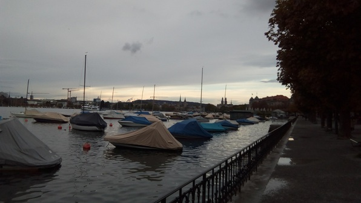
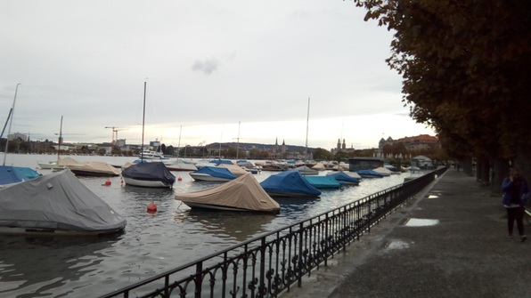

Most of the day was pretty boring! Slept in, went to the HB for groceries. Read more about Haskell–starting to grok it now :D
Fast Forward to Frisbee
Walk with Abhi a good distance to a park on the Limmat and play some frisbee!



He tells me about the struggle of education in India and why he’s stressed out right now–he’s worked so long for this opportunity and he’s only got 4 months (2 gone already) to convince his prof to extend his stay at the ETH. We play a lot of fun frisbee at the park and meet a cool dude named Michael.
Dinner
Alice put together a 2+ floor dinner (for the upper level of the floor 2 splitlevel.) Astonishingly, all 9 of us were there. I made garlic bread and some salad with cucumbers and tomatoes. It was great. Met a couple of new arrivals; a rowdy socialitealita named Camilla from Italy, and a subdued electrical-engineer-turned-machine-learner named Eric from Joisey (USA).
After the dinner, got in some good games of fussball and hit the hay.